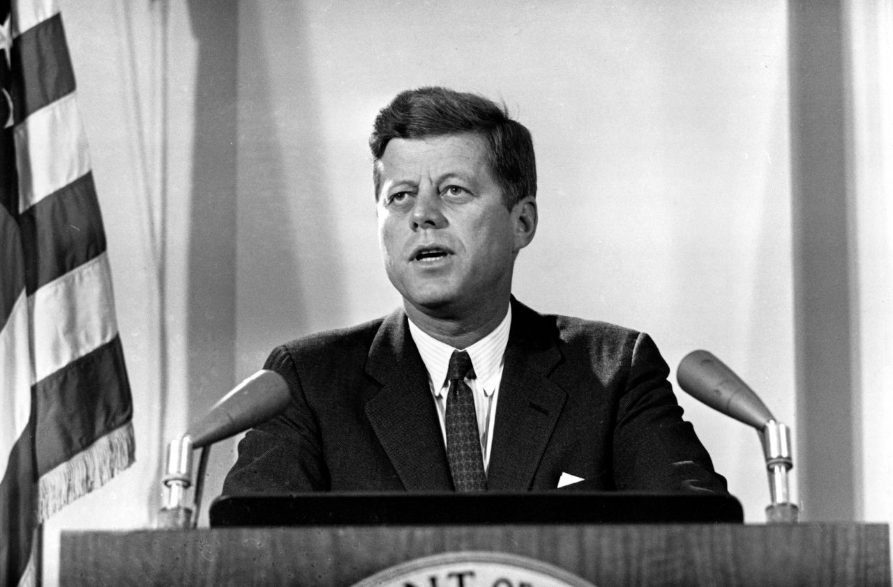

What role did Britain play in Kennedy’s management of the Cuban missile crisis?
“I have found it absolutely essential, in the interest of security and speed, to make my first decision on my own responsibility, but from now on I expect that we can and should be in the closest touch.” [1]
Six days after learning about Soviet missiles in Cuba, Kennedy told Macmillan that they should remain “in the closest touch” in order to best meet the oncoming threat to American national interests. But did this mean Macmillan played a role in Kennedy’s decision making? Or was this a symbolic gesture? Using the preponderance of primary and secondary literature that has been divulged in the decades after the 1960s, this essay will demonstrate that whilst there was evidence for ‘special’ Anglo-American relations during the Cuban missile crisis, Britain’s role in Kennedy’s management of events was restricted to consultation and was largely symbolic. This will be achieved by firstly contextualising the Anglo-American relationship prior to October 1962, secondly, underlining Britain and Macmillan’s reservations towards Kennedy’s initial response, and lastly, questioning factors which historians have recently suggested was evidence of ‘special’ Anglo-American relations during the crisis.
An important precept that must be established was the contrasting significance Cuba had for America and Britain. Whilst a Soviet-backed Cuba was a direct threat to American national security – evidenced by their three-year vendetta against the Castro regime – the British shared no such affiliation with Cuba. The notion is therefore put forward that Britain would never be able to do more than support and commend Kennedy’s decisions during the crisis. Dean Ashton believed the “Anglo-American relationship could not expect to occupy centre stage in Kennedy’s thinking”, and the fact it did was a testament to the Kennedy-Macmillan relationship. But this view changes when taking into consideration Anglo-American disputes in the Caribbean several years prior to the crisis. Britain’s ‘residual’ Caribbean colonial presence, Macmillan’s attempt to extricate themselves, and the US being considered the natural ‘inheritors’ reflected Anglo-American friction on several occasions from 1961-1962. The first instance was on September 1961, when Ambassador David Bruce requested the British to make available the airfield in the British territory of the Bahamas in order to launch “combat operations with tactical aircrafts” to counter communism spreading in the Caribbean from Cuba. Fearing information would leak to the press, the British refused, and this would set the precedent for the British Foreign Office’s disapproval of America’s anti-communist agenda in the Caribbean.[4]
Another instance was in the colony of British Guiana where US intelligence believed newly elected Cheddi Jagan, whose wife was a former member of the Young Communist League, to be a Marxist. By contrast, the British believed Jagan to be more “neutralist” than a communist, albeit a “naïve idealist.” Although Secretary of State Dean Rusk argued that they may face “another Castro-type situation” and that Jagan “should not accede to power again”, the British refused the CIA’s request to launch covert operations with Secretary Alec Douglas-Home arguing that they could not interfere with electoral procedure. The incredulity within the British Government was personified by Macmillan, who said:
“How can the Americans continue to attack us in the United Nations on colonialism and then use expressions like these which are not colonialism but pure Machiavellianism? Of course, it is nice to feel that they are partners with us and have such confidence in you as to send you a letter of this kind but it does show a degree of cynicism which I would have thought Dean Rusk could hardly put his pen to.”[6]
Thus, the effects of the Kennedy administration’s “anti-Castro crusade” were felt negatively by the British Government.
James Hershberg highlighted intricate levels of intelligence communication between the CIA and MI6 in the Caribbean from 1961-62 (in which the CIA’s decisions took the lead anyhow), but Anglo-American disputes – and by extension Kennedy-Macmillan disputes – were also seen in covert operations and trade embargoes. Although Kennedy had previously probed Macmillan over the question of Cuban rebels, Alastair Horne noted Macmillan’s disappointment to have learnt about the Bay of Pigs fiasco after its failure, believing that he would have been informed of the details had Eisenhower been president. A dispute which was felt more strongly by the British was the Kennedy administrations imposition of a trading embargo on Cuba. Overseas trade made up 40% of Britain’s gross national trade as opposed to America’s 6%, and whilst the British agreed, the embargo caused great strain for the British and Macmillan called it a “ridiculous” idea. Secretary Home also noted Kennedy’s frustration, stating “the President simply couldn’t understand why we could not help America by joining in an embargo”, with the Republicans “gunning for him in a big way.” British opposition stirred American resentment in the spring of 1962 as Ormsby-Gore reported, “Criticism of Her Majesty’s Government is exceedingly strong [in America] and few voices have been raised in our defence.” Macmillan admitted:
“We are in a rather bad period with [the] US. This is sad and may do us both harm.”[11]
Despite the primary literature previously depicting Macmillan and Kennedy’s bond as representing the highpoint of Anglo-American relations, the relationship was “far from auspicious.” Macmillan’s memoirs were not only littered with attempts to construct a narrative of British ascendancy, but played on Kennedy’s ‘Camelot persona’ and therefore glossed over many facts. Ashton claims that with such inauspicious relations prior to the crisis, it would have been unsurprising had Kennedy “elected to bypass the Anglo-American relationship altogether”, but this can be alternatively viewed as the Kennedy administration’s willingness to continue Britain’s “self-deception” of world leadership so that they could further their own foreign policy interests, not least in Europe where British cooperation was crucial. Macmillan’s response to the Cuban missile crisis must be seen within the context of Anglo-American disputes over the Caribbean and Cuban trade sanctions in the years building up to October 1962.
Kennedy notified Macmillan about Soviet missiles in Cuba on 22 October, six days after he himself found out, and having setup his ExComm committee, had several meetings, and already reached his decision for a blockade, Macmillan’s conflicting response would have no doubt been difficult for Kennedy to untangle. Ashton described it as a “strange mixture of ‘hawkish’ and dovish’ sentiments”, as on the one hand he warned against Europe’s stability, stating that they had grown “accustomed” to the threat of Soviet nuclear missiles, while also forcefully advocating an invasion as opposed to a blockade. Several reasons are given for Macmillan’s reservations such as his negative experiences of appeasement in the 1930s and the 1956 Suez crisis. But the main reason for his dislike of the blockade was over its questionable legality, as this falls in line with the aforementioned contextual factors and the Foreign Office’s longstanding stance against America’s anti-communist crusade. Gary Rawnsley highlighted that whilst the Foreign Office publically offered its full support to Kennedy’s decisions, privately, it was greatly concerned with America’s handling of Cuba with Joseph Godber saying, “Whatever the ethics of their use, and this is questionable, there is no likelihood that they would be successful in bringing down the present regime.” Macmillan said in his diary that the blockade was “patently illegal”, but toned down his concerns in the letter he sent back to Kennedy on 23 October, stating that international lawyers will find it difficult to defend the “blockade which involves the searching of all ships... in peace-time.”[16]
Nevertheless, Kennedy dismissed Macmillan’s reservations in his response which set the tone for the next series of telephone conversations. Close readings of the telephone transcripts reveal that correspondences were not much more than a relay of information from Washington to London, or as Rawsnley put it, Macmillan served “purely as a sounding board for Kennedy’s rambling thoughts.” There was only one instance when Kennedy asked Macmillan for genuine advice, which was regarding the “$64,000 question” on 24 October on whether the US should take military action against Cuba, but even this did not lead to any change in Kennedy’s decision-making as Macmillan’s response on 25 October, where he suggested replying to U Thant by concentrating on the “system of inspection by the UN”, was overlooked. Macmillan said in his memoirs that he “felt all the time intimately informed of each changing aspect of these terrible days,” but it is clear that he acknowledged the events were beyond his influence as he later went onto say that despite “his frightful desire to do something... to not do anything was probably the right answer.” Additionally, Kennedy described the correspondence as “our private channel of communication”, which Macmillan was not best pleased with, noting in his memoirs that he was unable to dispel the Parliament Oppositions accusation that there was no ‘special relationship’ because of this.[19]
The role of Ambassador David Ormsby-Gore is often pinpointed as the prime example of British influence during the crisis, as his close relations with Kennedy enabled him to be the first foreign official to be notified of the crisis on 21 October – a day before Macmillan. Ormsby-Gore’s role was certainly active as he firstly proposed that the U2 photographs be published, and secondly suggested that the quarantine line be moved closer to the Cuban coast from 800m to 500m, both of which Kennedy accepted and in the case of the latter, he even overruled Secretary of Defence Robert McNamara. It is unsurprising then that the observation was made that Ormsby-Gore was a “de facto member of the ExComm”, or as Alastair Horne wrote, the Kennedy-Gore relationship had “attained a degree of intimacy quite resented by other ambassadors, as well as by senior members of the administration.” But was the Kennedy-Gore partnership representative of an Anglo-American one? Although Ormsby-Gore’s impact qualified as being British “by virtue of his nationality and office”, his influence over the President was primarily due to the personal nature of their relationship. He was one of the closest confidants and friends of the Kennedy family and was specifically appointed to that office by Kennedy, and therefore was no ordinary ambassador. When talking retrospectively about the Macmillan Government’s role in the crisis, Ormsby-Gore said:
“I can’t honestly think of anything said from London that changed the US action – it was chiefly re-assurances to JFK.”[22]
Another instance where the British were said to have had an impact was the release of the U2 photographs as the British published them before the American’s on 23 October, but this now turns out to have been a misunderstanding. Conversations in ExComm that day reveal the White House had not permitted the publication of the photographs but Macmillan assumed that their release would be immediate, and with London being five hours ahead, this led to the British press receiving the photographs before the American press. Kennedy simply “decided to make the best out of a bad job”, stating that he intended to reveal the photographs anyway. An undeniably ‘special’ aspect was Kennedy and Macmillan’s line of communication, with the installation of the KY-9 scrambler phone from the White House to the Admiralty House enabling daily correspondence. But even this had its limitations. First was the distortion of their speech as the scrambler was unable to pick up on inflections. Second was the awkward technology; a button had to be pressed for one to speak, and the same button had to be released before the other to respond. This could explain why Macmillan’s responses were significantly shorter than Kennedy’s whose lengthy monologues also reinforce the idea that the President was informing Macmillan, not consulting. Furthermore, security measures and language barriers could also help explain why Macmillan was the only foreign leader to be informed of events via telephone, as German Chancellor Adenauer was not called due to the potential clash with the KY-9 link in the Paris NATO Headquarters. Also, a common language could have also influenced Kennedy’s decision to correspond with Macmillan as unlike Charles de Gaulle, he would not have to talk to him through interpreters.[25]
Although Macmillan was given a unique position among the Western leaders, his communication was confined to consultation as his words neither changed Kennedy’s decision-making nor had any impact in the resolution of the crisis. This is best demonstrated by Macmillan’s ‘Thor proposal’ on 26 October, an offer to remove Thor missiles stationed in the UK for the Soviet missiles in Cuba. The proposal may have been a symbolic gesture as the missiles were obsolete and scheduled for removal that year, but Macmillan’s pursuit to put this initiative forward, as well as his memoirs noting Khrushchev’s Turkish offer being “very dangerous”, suggested otherwise. Kennedy once again dismissed his proposal in their 26 October call, “Let me put that into the machinery and then I’ll be in touch with you on that...” A response which Ashton believed was “tantamount to saying he was burying it.” However, Macmillan strove to shift Kennedy’s attention to U Thant’s proposal, writing to Ormsby-Gore, “I could not allow a situation in Europe or in the world to develop which looks like escalating into war without trying some action by calling a conference on my own, or something of the kind, to stop it.” But unknown to the British, the Kennedy administration were formulating a response to Khrushchev’s Jupiter offer on 27 October – a response which would lead to the settlement of the crisis the following day, with Macmillan’s Thor proposal not mentioned once in the ExComm meetings. The Americans negotiated bilaterally with the Soviets and made a crucial concession on the Jupiter missiles in Turkey, which did not have British approval and was kept secret to them. Rawnsley consequently concluded that Britain’s primary function during the crisis was “leading European and Commonwealth support for the United States.”
Historians such as Peter Boyle have argued that Britain’s public support for the US “undoubtedly contributed to Khrushchev’s decision to yield” as the British blocked one possible way out of the crisis for the Soviets who could have exploited Western divisions, but this did not outweigh the fact the US acted independently in all their major decisions despite previous British concerns, even overriding international law, and Macmillan did not change Kennedy’s decision in any occasion nor were any of his proposals accepted. This is best captured by Sir Harold Caccia’s reaction to Kennedy’s reassurance on 26 October – when the crisis reached its climax – that he “would not take any drastic action... without telling the Prime Minister in advance.” Caccia said to Macmillan:
“This does not mean that we shall be consulted... The reality would in all probability be that the President had already taken his decision to act. Thus at that time it would be likely to be too late for any other initiative.”
It would not be far-fetched to suggest that Anglo-American correspondences, although they took place almost every day from 23-28 October, were not much more than a formal observance of diplomatic procedure among the Atlantic partners. Even Kennedy’s first telegram to Macmillan where he said they should remain “in the closest touch”, this was preceded by Kennedy saying that he had already made the first decision “in the interest of security and speed”, and was followed by, “together with our friends we will resolutely meet this challenge.” This revealed that 1) Britain was not involved in the preliminary decision making at all, and 2) Britain’s role was placed alongside America’s other allies, albeit to a slightly higher degree. James Nathan perfectly summarised that in situations such as the Cuban missile crisis, “Allies became mere appurtenances of power whose purpose in the duopolistic structure of international society was increasingly symbolic.”[30]